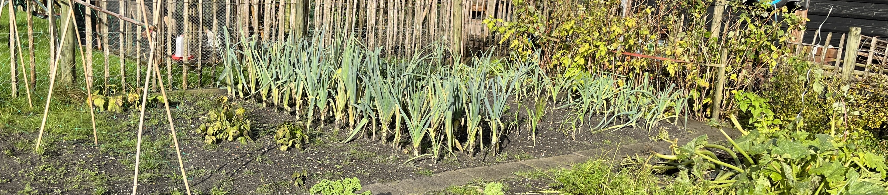
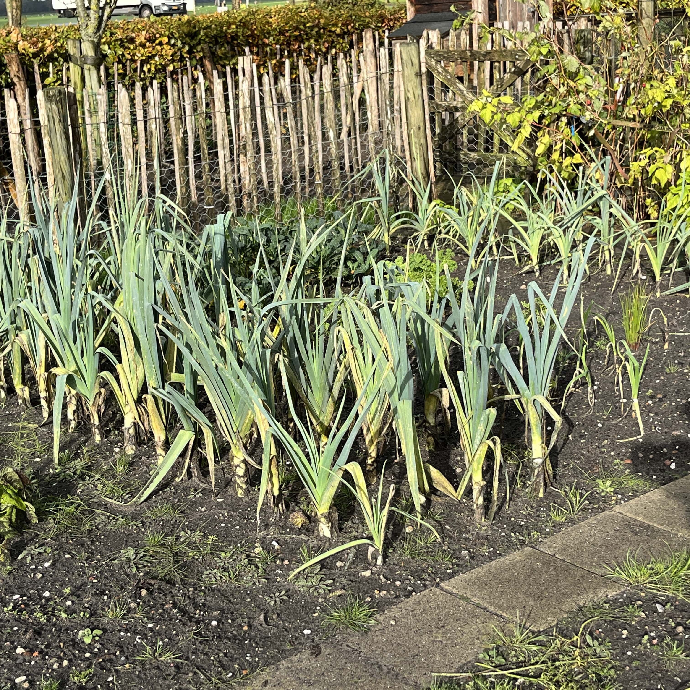
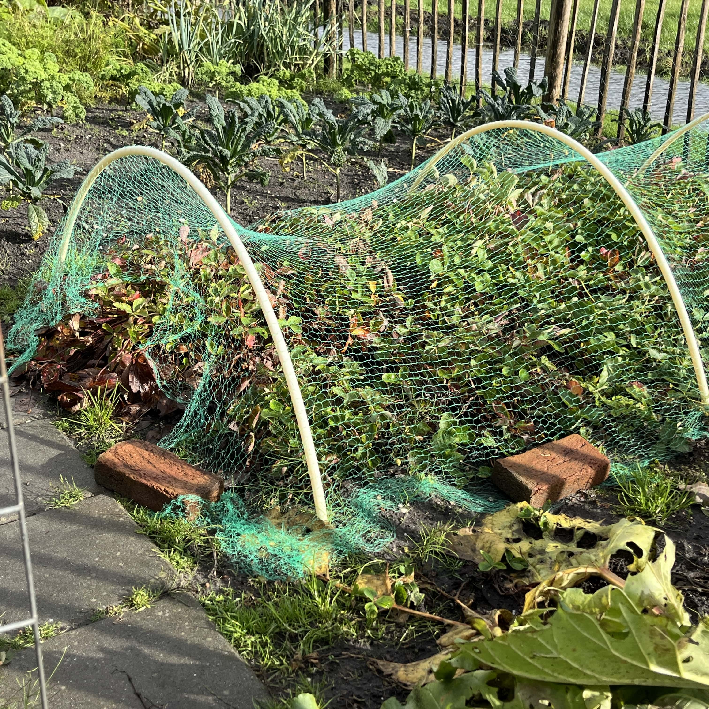
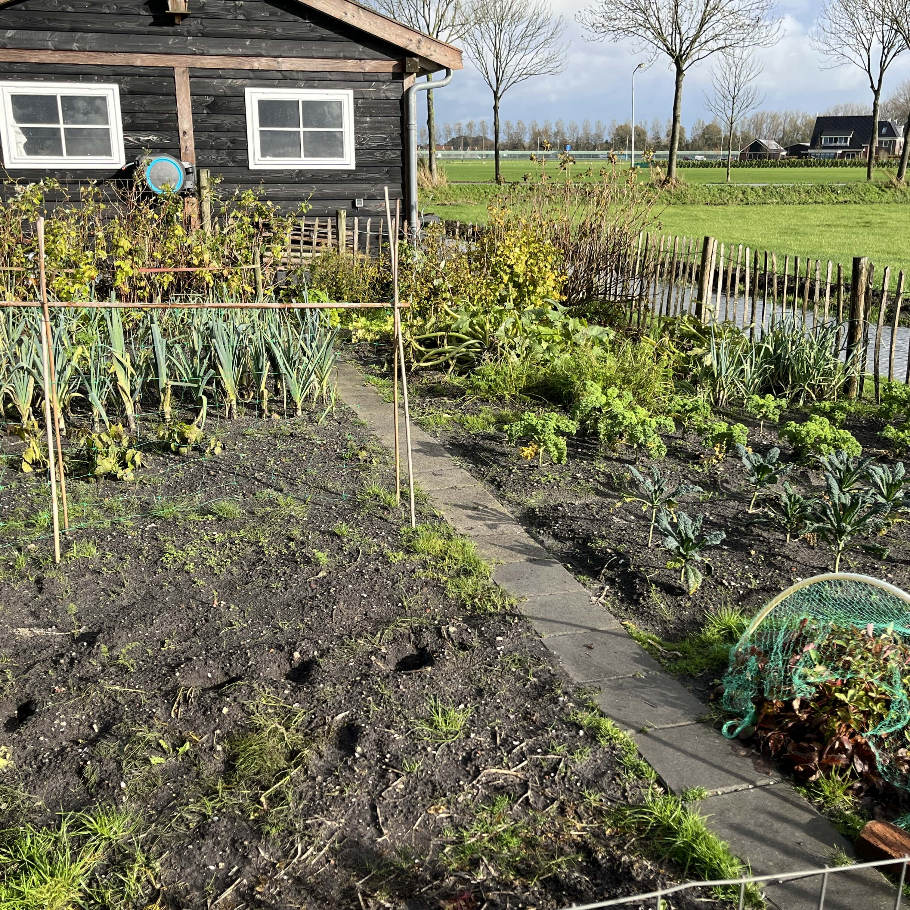
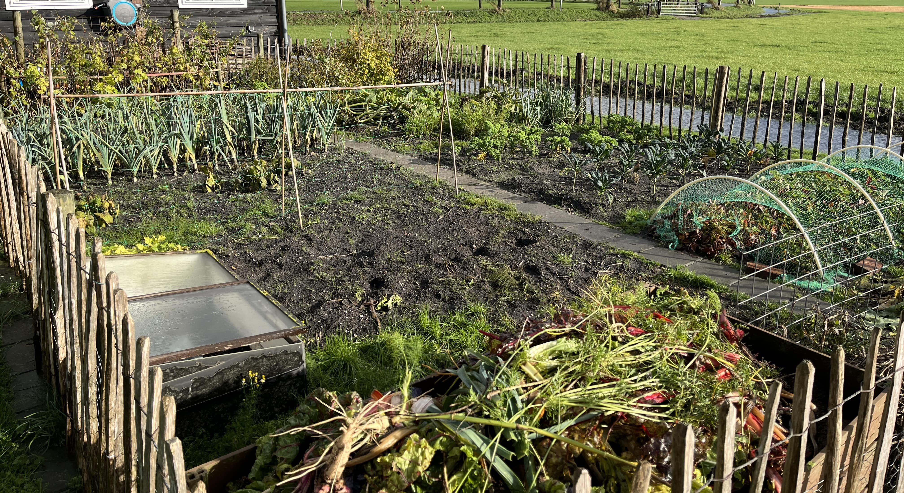

Mijn eigen moestuin
Wij hebben thuis ook een moestuin, deze moestuin zorgt ervoor dat wij bepaalde soorten groentes helemaal niet meer hoeven te kopen. Groentes zoals aardappels en courgette hebben wij in overvloed. Niet alleen is dit goedkoper dan om het te halen in de supermarkt, ook is dit veel duurzamer. Het zelf kweken van groentes bespaart weer productie, verpakkingsmateriaal, overbodig watergebruik, enzovoorts.



Wij hebben best een grote moestuin, hierdoor dus ook een hoop groentes. We hebben in het verleden ook weleens groente langs de straat verkocht. Met bijvoorbeeld palmkool en coutgette moet je uitkijken dat je niet teveel planten hebt want van bijvoorbeeld één courgetteplant komen al heel veel courgettes.
